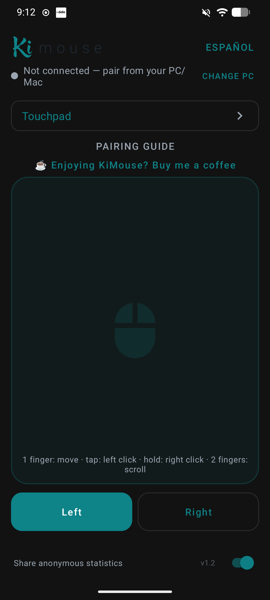
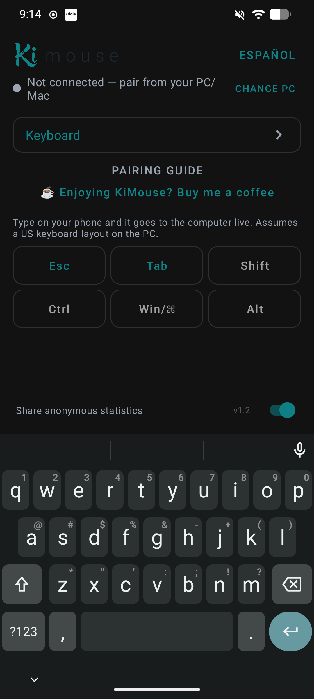

01 Móvil y Bluetooth
KiMouse
Tu teléfono. Un mouse.
Una cosa menos que llevar.
Una app Android que convierte el teléfono en mouse y teclado Bluetooth para dispositivos compatibles, sin Wi-Fi ni una aplicación adicional en el computador.
Google Play, de principio a fin. Gestioné todo el proceso de publicación: configuración de Play Console, ficha de la tienda, pruebas, declaraciones de políticas y lanzamientos.
Mi participación y resultados
Me encargué de forma independiente de los requisitos, la experiencia de usuario, el desarrollo, la depuración, las pruebas en dispositivos, la incorporación de comentarios y la publicación en Google Play.
La app incluye gestos de panel táctil, clics, desplazamiento, entrada de teclado, atajos y movimiento automático del mouse configurable. Utilicé desarrollo asistido por IA y prototipado rápido durante todo el proceso.